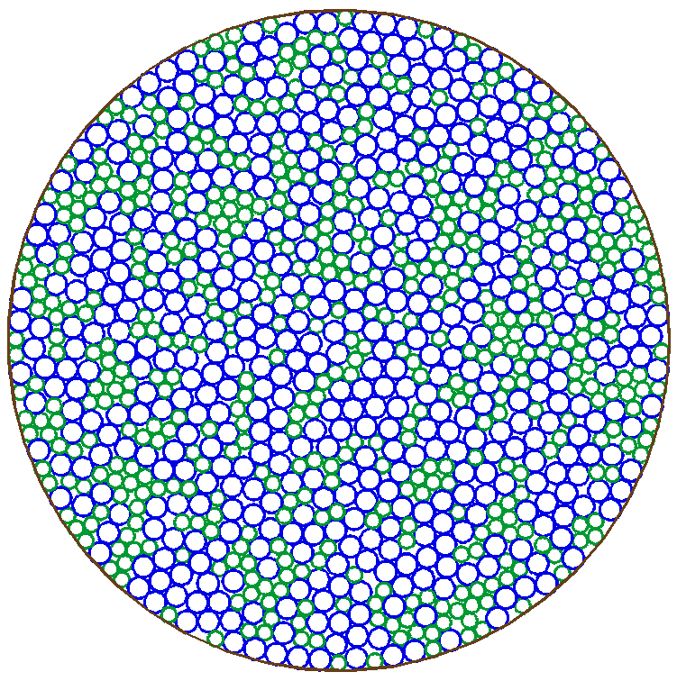
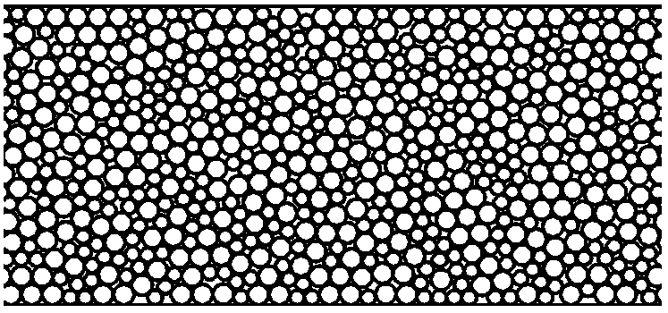
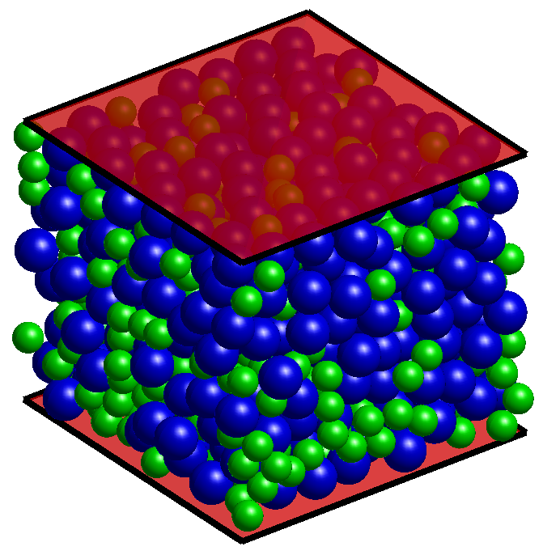

While many studies have focused on random packing of disks in 2D and spheres in 3D in bulk (periodic) settings, far less attention had been paid to how the boundaries of a container alter the packing structure near the walls. We developed an algorithm to generate random close packings in confined systems and systematically characterized the wall-induced ordering effects.
Starting from the RCP algorithm based on swelling and energy minimization, we imposed hard-wall boundary conditions in planar, cylindrical, and spherical geometries. The resulting packings reveal a layering effect near the walls — a well-known but incompletely characterized phenomenon. We quantified how the local packing fraction and structural order vary as a function of distance from the boundary.



Left: 2D packing confined within a circular container. Center/Right: 2D and 3D planar-confined packings illustrating the wall-induced layering of particles.